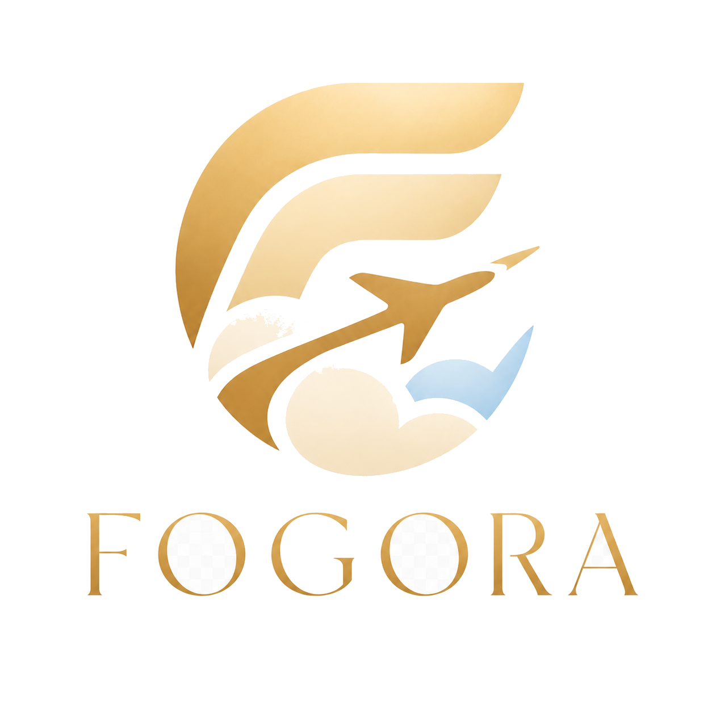
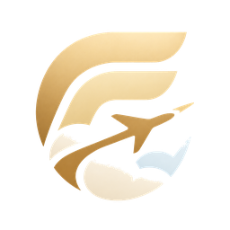

Copilotul calm pentru perturbările de zbor — pitch de business

Fogora01 / 10Model ML pe date METAR identifică riscul de ceață pe ore, per aeroport.
Notificare proactivă pe WhatsApp / SMS / push, doar când riscul e ridicat.
Alternative reale — tren, autocar, alt zbor, reroute prin aeroport vecin.
Status + risc de perturbare în timp real, fără cont. Numărul de telefon doar pentru alerte.
% risc de anulare, gabarit meteo (ceață / vreme rea / general), terminal & itinerariu.
Sortabile după timp sau preț, cu linkuri directe de rezervare (CFR, FlixBus, zboruri).
Calcul compensație EU261, cerere prin AirHelp, hoteluri partenere lângă aeroport.
Milioane de pasageri pe aeroporturi regionale expuse la ceață (toamnă–iarnă). Adopție prin durere reală + UX calm.
Acces la predicția de ceață prin API: tablou de risc per zbor, prognoză per aeroport. Ops & planificare.
Aceeași infrastructură de predicție alimentează atât aplicația, cât și API-ul comercial.
Gratuit pentru verificare; abonament pentru alerte premium, multi-zbor, familie.
Plan pe chei API + cote: tablou de risc per aeroport / zbor pentru companii & aeroporturi.
Comision din rezervări — hoteluri partenere, AirHelp (compensații), transport alternativ.
Aplicație PWA instalabilă + backend live + API public — toate construite și testate.
Hai să ducem calmul la fiecare poartă de îmbarcare.